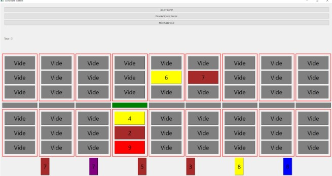

Duration
February 2023 - July 2023
Location
Université de Technologie de Compiègne
Description
As part of an object-oriented programming course, I contributed to the development of a digital version of Schotten-Totten, a strategic card game for two players. Schotten-Totten challenges players to claim border stones by creating the strongest card combinations. My primary responsibilities in this project were implementing the game rules and developing the Qt-based graphical user interface. In the rules implementation, I ensured that all game mechanics were accurately translated into code, including card placement, combination strength evaluation, and border stone claiming. This required a deep understanding of both the game's logic and object-oriented programming principles. I also implemented the tactical variant of the game, which introduces special cards with unique abilities, adding an extra layer of strategy.
For the Qt interface, I designed and developed an intuitive and visually appealing game board that accurately represents the physical game. This included creating interactive elements for card selection, placement, and border stone claiming. I also implemented game state visualization, allowing players to easily track their progress and strategize accordingly. This project not only enhanced my skills in C++ and object-oriented programming but also provided valuable experience in game logic implementation and GUI development using Qt. It demonstrated my ability to translate complex rule sets into functional code and create user-friendly interfaces for interactive applications.